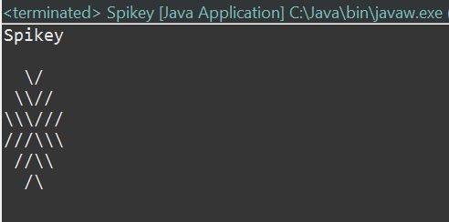
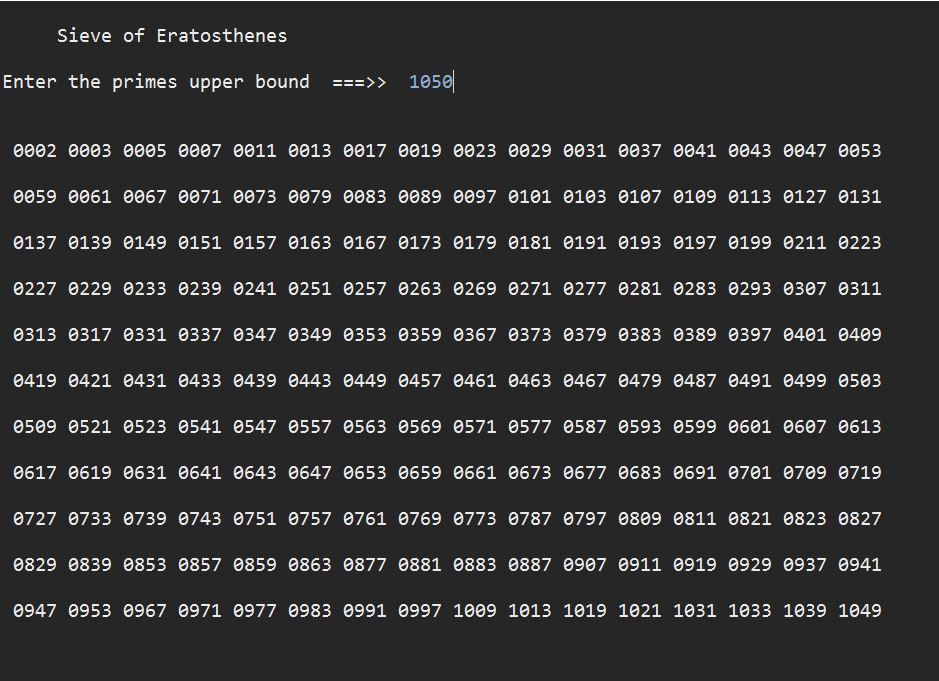
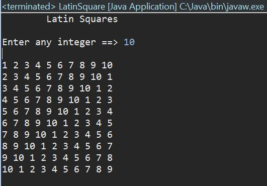
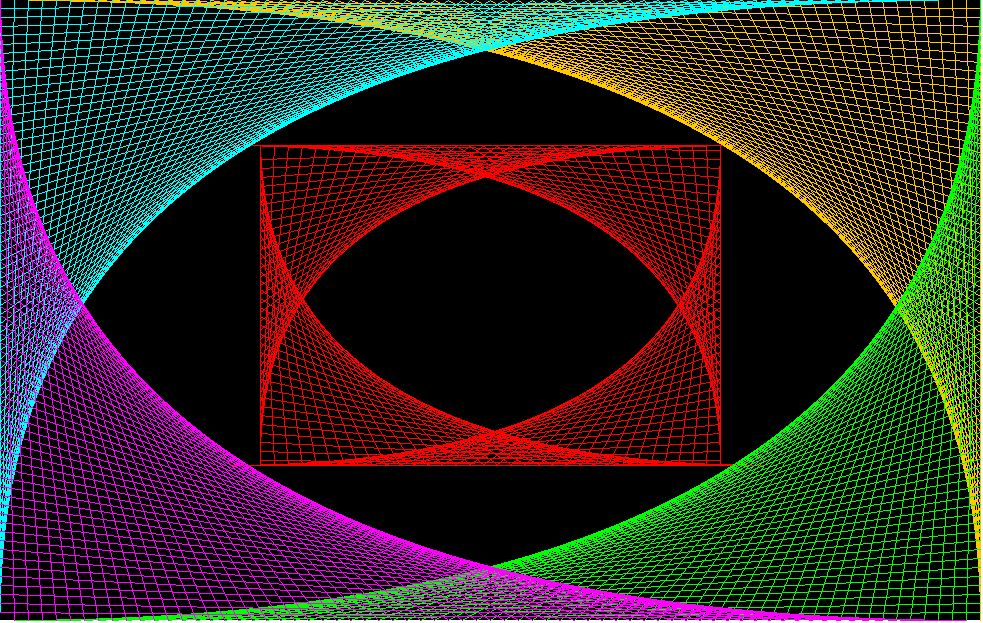

This is my page for CS which is taught by Ms. Taricco. So far, we've been working on our websites learning Java, HTML, and CSS, which are different types of programming languages. HTML and CSS is used for web designing, which I used to create this web page.
Our final CS project is called Apps for Good,
where groups of three to four people create an app from scratch that is designed to solve an issue in society.
Veronika Enis, Yuxiang Mao, and I created an app that can provide the user with the nutrient composition of each vegetable
as well as a list of the top ten vegetables that has the highest correlating nutrient.
Click on the photo to see our presentation poster!
If you want more information about the app, please feel free to contact me or my group members.

So far, we've been working on the programming language Java. Here
are few of many programs I have coded using Java:
Spikey is the first program I ever created using Java.

Sieve of Eratosthenes is a program that outputs all the prime
numbers until it reaches the upper bound.

Latin Squares is another Java program I coded that outputs a "n x
n" square with ascending numbers until n.

Line Art is a Java program that uses the Java applet program.
Applet uses small, interactive components that can be used on a web
page.
